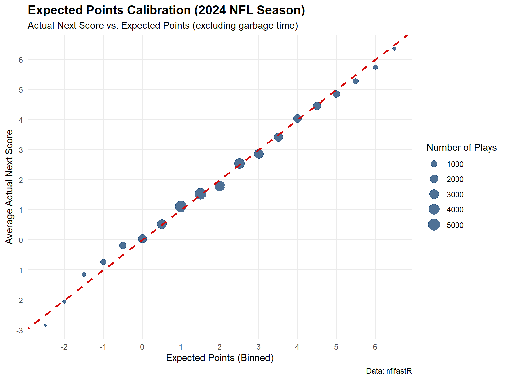
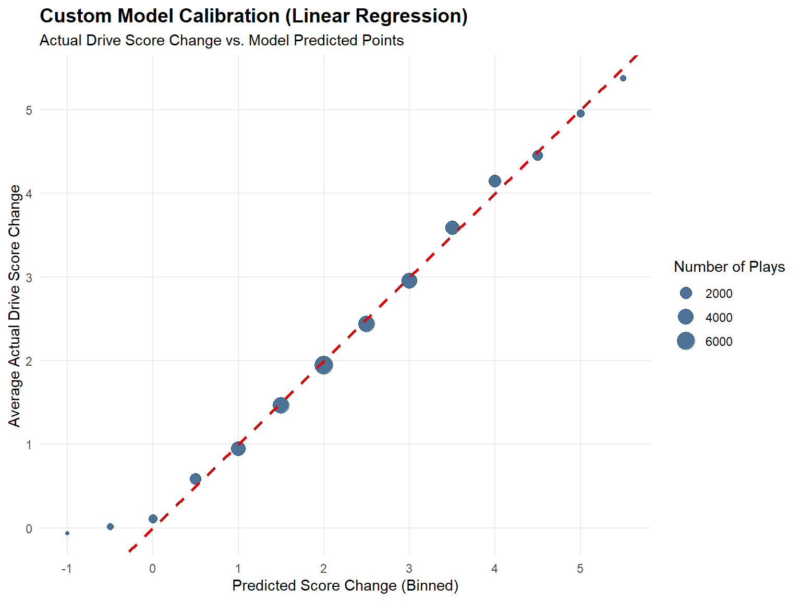
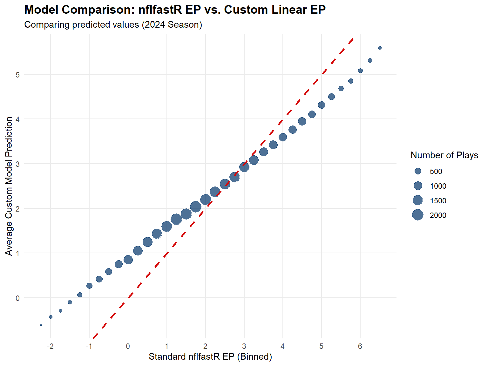
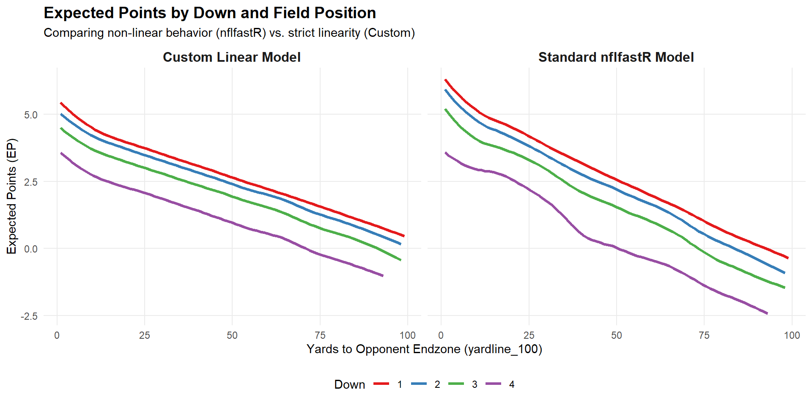
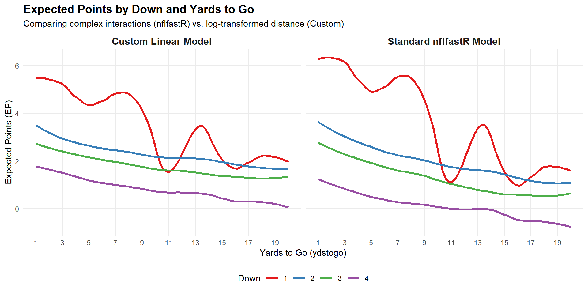

Code
library(tidyverse)
library(nflfastR)This document loads play-by-play data from the 2024 NFL season, removes garbage time (defined as plays where the win probability is outside the 5% to 95% range), and visualizes how well the Expected Points (EP) model calibrates to the actual next scoring events.
library(tidyverse)
library(nflfastR)Load the 2024 NFL season data.
pbp_2024 <- load_pbp(2024)Filter the data and get the next score value
pbp_filtered <- pbp_2024 %>%
# Remove extra points (EP assumes TDs are worth 7 flat) and plays missing data
filter(
season_type == "REG",
!is.na(ep),
!is.na(posteam),
!play_type %in% c("extra_point", "two_point_attempt")
) %>%
group_by(game_id, game_half) %>%
mutate(
# Step A: Identify scoring events from a fixed (Home Team) perspective
home_scoring_event = case_when(
touchdown == 1 & td_team == home_team ~ 7,
touchdown == 1 & td_team == away_team ~ -7,
field_goal_result == "made" & posteam == home_team ~ 3,
field_goal_result == "made" & posteam == away_team ~ -3,
safety == 1 & defteam == home_team ~ 2,
safety == 1 & defteam == away_team ~ -2,
TRUE ~ NA_real_
)
) %>%
# Step B: Backfill the score to all preceding plays in the half
tidyr::fill(home_scoring_event, .direction = "up") %>%
mutate(
# Step C: If no more scores happen in the half, the next score is 0
home_scoring_event = coalesce(home_scoring_event, 0),
# Step D: Convert back to the possession team's perspective
pts_next_score = if_else(posteam == home_team, home_scoring_event, -home_scoring_event)
) %>%
ungroup() %>%
# Apply our garbage time filters
filter(
!is.na(wp),
wp >= 0.05,
wp <= 0.95
)Next we are going to look at a calibration plot. This plot is an important one in model prediction. It plots the predicted (or expected) values against the actual values. (Not unlike a Q-Q plot.) To simplify things, it is often the case that we bin the predicted values. Here they are binned into half point windows. Here the binning is done by taking the predicted value bins and getting the mean of the actual points in the next score for those plays.
calibration_data <- pbp_filtered %>%
mutate(ep_bin = round(ep * 2) / 2) %>%
group_by(ep_bin) %>%
summarize(
actual_pts = mean(pts_next_score),
plays = n(),
.groups = "drop"
) %>%
# Filter out very small bins to reduce noise at extreme ends
filter(plays >= 50)
ggplot(calibration_data, aes(x = ep_bin, y = actual_pts)) +
geom_point(aes(size = plays), alpha = 0.7, color = "#013369") +
geom_abline(slope = 1, intercept = 0, linetype = "dashed", color = "#D50A0A", linewidth = 1) +
scale_x_continuous(breaks = seq(-4, 7, 1)) +
scale_y_continuous(breaks = seq(-4, 7, 1)) +
labs(
title = "Expected Points Calibration (2024 NFL Season)",
subtitle = "Actual Next Score vs. Expected Points (excluding garbage time)",
x = "Expected Points (Binned)",
y = "Average Actual Next Score",
size = "Number of Plays",
caption = "Data: nflfastR"
) +
theme_minimal() +
theme(
plot.title = element_text(face = "bold", size = 14),
panel.grid.minor = element_blank()
)
Why are calibration plots useful?
Redo the above using 0.25 points bins. Hint change line 75 above.
Redo the above using 2025 data
So the Expected Points calculation from the Yurko et al paper using a multinomial logit to get the expected points. What would happen if we used just the points for a given drive and we just used a regular regression model with the points per drive as the target/response. Those are big changes to the model but let’s try it and see what differences we find.
Sticking with the 2024 data.
pbp_with_drive_score <- pbp_filtered %>%
# Ensure the data is sorted chronologically
arrange(game_id, play_id) %>%
# 1. Create static post-play scores for home and away teams
mutate(
home_score_post = if_else(posteam == home_team, posteam_score_post, defteam_score_post),
away_score_post = if_else(posteam == away_team, posteam_score_post, defteam_score_post)
) %>%
# 2. Group by game and drive (filtering out pre-game/halftime missing drives)
filter(!is.na(drive)) %>%
group_by(game_id, drive) %>%
mutate(
# Calculate the points scored by each team strictly during this drive
drive_home_pts = last(home_score_post, na_rm = TRUE) - first(total_home_score, na_rm = TRUE),
drive_away_pts = last(away_score_post, na_rm = TRUE) - first(total_away_score, na_rm = TRUE),
# Identify the team that began the drive with the ball
drive_posteam = first(posteam, na_rm = TRUE),
# 3. Calculate net score change relative to the initial possession team
drive_score_change = if_else(
drive_posteam == home_team,
drive_home_pts - drive_away_pts,
drive_away_pts - drive_home_pts
)
) %>%
ungroup() %>%
# Select key columns to verify the results
select(
game_id, drive, play_id, desc,
drive_posteam, drive_home_pts, drive_away_pts, drive_score_change
)
# View a sample of the output (e.g., a scoring drive)
pbp_with_drive_score %>%
filter(drive_score_change != 0) %>%
head(10) %>%
knitr::kable()| game_id | drive | play_id | desc | drive_posteam | drive_home_pts | drive_away_pts | drive_score_change |
|---|---|---|---|---|---|---|---|
| 2024_01_ARI_BUF | 1 | 40 | 2-T.Bass kicks 65 yards from BUF 35 to end zone, Touchback to the ARI 30. Kick through end zone. | ARI | 0 | 6 | 6 |
| 2024_01_ARI_BUF | 1 | 61 | (15:00) 6-J.Conner up the middle to ARI 33 for 3 yards (43-T.Bernard, 7-Ta.Johnson). | ARI | 0 | 6 | 6 |
| 2024_01_ARI_BUF | 1 | 83 | (14:27) 1-K.Murray pass short left to 6-J.Conner to BUF 45 for 22 yards (3-D.Hamlin, 31-R.Douglas). | ARI | 0 | 6 | 6 |
| 2024_01_ARI_BUF | 1 | 108 | (13:43) (Shotgun) 1-K.Murray pass short middle to 6-J.Conner to BUF 36 for 9 yards (9-T.Rapp; 42-Do.Williams). | ARI | 0 | 6 | 6 |
| 2024_01_ARI_BUF | 1 | 133 | (13:02) 6-J.Conner up the middle to BUF 34 for 2 yards (43-T.Bernard). | ARI | 0 | 6 | 6 |
| 2024_01_ARI_BUF | 1 | 155 | (12:26) (Shotgun) 6-J.Conner left guard to BUF 32 for 2 yards (98-A.Johnson, 42-Do.Williams). | ARI | 0 | 6 | 6 |
| 2024_01_ARI_BUF | 1 | 177 | (11:51) 6-J.Conner left end to BUF 30 for 2 yards (43-T.Bernard). | ARI | 0 | 6 | 6 |
| 2024_01_ARI_BUF | 1 | 199 | (11:08) (Shotgun) 1-K.Murray pass short middle to 4-G.Dortch to BUF 22 for 8 yards (43-T.Bernard, 9-T.Rapp). BUF-7-Ta.Johnson was injured during the play. T.Johnson walks off. | ARI | 0 | 6 | 6 |
| 2024_01_ARI_BUF | 1 | 224 | (10:32) (Shotgun) 1-K.Murray pass incomplete short right to 18-M.Harrison. Thrown wide of receiver, along sideline at BUF 10. | ARI | 0 | 6 | 6 |
| 2024_01_ARI_BUF | 1 | 265 | (10:28) (Shotgun) 6-J.Conner left tackle to BUF 25 for -3 yards (50-G.Rousseau). | ARI | 0 | 6 | 6 |
model_data <- pbp_filtered %>%
arrange(game_id, play_id) %>%
mutate(
home_score_post = if_else(posteam == home_team, posteam_score_post, defteam_score_post),
away_score_post = if_else(posteam == away_team, posteam_score_post, defteam_score_post)
) %>%
filter(!is.na(drive)) %>%
group_by(game_id, drive) %>%
mutate(
drive_home_pts = last(home_score_post, na_rm = TRUE) - first(total_home_score, na_rm = TRUE),
drive_away_pts = last(away_score_post, na_rm = TRUE) - first(total_away_score, na_rm = TRUE),
drive_posteam = first(posteam, na_rm = TRUE),
drive_score_change = if_else(
drive_posteam == home_team,
drive_home_pts - drive_away_pts,
drive_away_pts - drive_home_pts
)
) %>%
ungroup() %>%
# Filter for plays with valid predictors
filter(
!is.na(down),
!is.na(half_seconds_remaining),
!is.na(yardline_100),
!is.na(ydstogo),
!is.na(goal_to_go),
ydstogo > 0 # Prevent log(0) errors
) %>%
mutate(
# Create the custom predictors requested
log_ydstogo = log(ydstogo),
under_two_minutes = if_else(half_seconds_remaining <= 120, 1, 0),
# Treat down as a categorical factor since the difference
# between 3rd and 4th down isn't the same as 1st and 2nd down
down = as.factor(down)
)ep_model <- lm(
drive_score_change ~ down + half_seconds_remaining + yardline_100 +
log_ydstogo + goal_to_go + under_two_minutes,
data = model_data
)
# Generate predictions and append them to the dataset
model_data <- model_data %>%
mutate(predicted_score_change = predict(ep_model, newdata = model_data))
# Quick look at the model summary
summary(ep_model)
Call:
lm(formula = drive_score_change ~ down + half_seconds_remaining +
yardline_100 + log_ydstogo + goal_to_go + under_two_minutes,
data = model_data)
Residuals:
Min 1Q Median 3Q Max
-11.0341 -1.7378 -0.4514 1.6761 7.5722
Coefficients:
Estimate Std. Error t value Pr(>|t|)
(Intercept) 5.466e+00 6.545e-02 83.512 < 2e-16 ***
down2 -3.695e-01 3.219e-02 -11.479 < 2e-16 ***
down3 -9.013e-01 3.821e-02 -23.588 < 2e-16 ***
down4 -1.841e+00 4.669e-02 -39.425 < 2e-16 ***
half_seconds_remaining 9.619e-05 2.830e-05 3.400 0.000676 ***
yardline_100 -4.409e-02 6.262e-04 -70.417 < 2e-16 ***
log_ydstogo -2.717e-01 2.106e-02 -12.901 < 2e-16 ***
goal_to_go 1.119e-01 6.140e-02 1.823 0.068288 .
under_two_minutes -5.249e-01 4.741e-02 -11.071 < 2e-16 ***
---
Signif. codes: 0 '***' 0.001 '**' 0.01 '*' 0.05 '.' 0.1 ' ' 1
Residual standard error: 2.363 on 33486 degrees of freedom
Multiple R-squared: 0.2087, Adjusted R-squared: 0.2086
F-statistic: 1104 on 8 and 33486 DF, p-value: < 2.2e-16Note that each of the predictors is significant, except maybe goal_to_go.
How would you interpret each of these coefficients?
Let’s look at the model calibration for our new model.
calibration_data <- model_data %>%
mutate(pred_bin = round(predicted_score_change * 2) / 2) %>%
group_by(pred_bin) %>%
summarize(
actual_pts = mean(drive_score_change),
plays = n(),
.groups = "drop"
) %>%
filter(plays >= 50) # Remove noisy extremes with small sample sizes
ggplot(calibration_data, aes(x = pred_bin, y = actual_pts)) +
geom_point(aes(size = plays), alpha = 0.7, color = "#013369") +
geom_abline(slope = 1, intercept = 0, linetype = "dashed", color = "#D50A0A", linewidth = 1) +
scale_x_continuous(breaks = seq(-4, 7, 1)) +
scale_y_continuous(breaks = seq(-4, 7, 1)) +
labs(
title = "Custom Model Calibration (Linear Regression)",
subtitle = "Actual Drive Score Change vs. Model Predicted Points",
x = "Predicted Score Change (Binned)",
y = "Average Actual Drive Score Change",
size = "Number of Plays"
) +
theme_minimal() +
theme(
plot.title = element_text(face = "bold", size = 14),
panel.grid.minor = element_blank()
)
From the above plot, we see that model is pretty well calibrated.
comparison_data <- model_data %>%
# Bin the standard nflfastR EP
mutate(ep_bin = round(ep * 4) / 4) %>%
group_by(ep_bin) %>%
summarize(
# Average our custom model's predictions within each standard EP bin
avg_custom_pred = mean(predicted_score_change),
plays = n(),
.groups = "drop"
) %>%
# Filter out extreme outliers with tiny sample sizes (like -4 EP)
filter(plays >= 50)
ggplot(comparison_data, aes(x = ep_bin, y = avg_custom_pred)) +
geom_point(aes(size = plays), alpha = 0.7, color = "#013369") +
geom_abline(slope = 1, intercept = 0, linetype = "dashed", color = "#D50A0A", linewidth = 1) +
scale_x_continuous(breaks = seq(-4, 7, 1)) +
scale_y_continuous(breaks = seq(-4, 7, 1)) +
labs(
title = "Model Comparison: nflfastR EP vs. Custom Linear EP",
subtitle = "Comparing predicted values (2024 Season)",
x = "Standard nflfastR EP (Binned)",
y = "Average Custom Model Prediction",
size = "Number of Plays"
) +
theme_minimal() +
theme(
plot.title = element_text(face = "bold", size = 14),
panel.grid.minor = element_blank()
)
Explain this plot. Why are the blue dots not on the red dashed line? Is that an indication of a bad model?
# Aggregate the data
plot_data <- model_data %>%
# Filter to downs 1-4
filter(down %in% c("1", "2", "3", "4")) %>%
group_by(down, yardline_100) %>%
summarize(
nflfastR_EP = mean(ep, na.rm = TRUE),
Custom_Linear_EP = mean(predicted_score_change, na.rm = TRUE),
plays = n(),
.groups = "drop"
) %>%
# Filter out extremely rare yardlines to prevent jagged line spikes
filter(plays >= 10) %>%
# Pivot longer to make ggplot faceting easy
pivot_longer(
cols = c(nflfastR_EP, Custom_Linear_EP),
names_to = "model_type",
values_to = "ep_value"
) %>%
mutate(
model_type = if_else(model_type == "nflfastR_EP", "Standard nflfastR Model", "Custom Linear Model")
)
# Create the visualization
ggplot(plot_data, aes(x = yardline_100, y = ep_value, color = down)) +
# Using geom_smooth with a small span creates cleaner curves than raw geom_line
geom_smooth(se = FALSE, span = 0.3, linewidth = 1.2) +
facet_wrap(~ model_type, ncol = 2) +
scale_color_brewer(palette = "Set1") +
labs(
title = "Expected Points by Down and Field Position",
subtitle = "Comparing non-linear behavior (nflfastR) vs. strict linearity (Custom)",
x = "Yards to Opponent Endzone (yardline_100)",
y = "Expected Points (EP)",
color = "Down"
) +
theme_minimal() +
theme(
plot.title = element_text(face = "bold", size = 14),
strip.text = element_text(face = "bold", size = 12),
legend.position = "bottom",
panel.grid.minor = element_blank()
)
plot_data_ydstogo <- model_data %>%
# Filter to downs 1-4 and realistic yards to go
filter(
down %in% c("1", "2", "3", "4"),
ydstogo >= 1,
ydstogo <= 20
) %>%
group_by(down, ydstogo) %>%
summarize(
nflfastR_EP = mean(ep, na.rm = TRUE),
Custom_Linear_EP = mean(predicted_score_change, na.rm = TRUE),
plays = n(),
.groups = "drop"
) %>%
# Ensure sufficient sample size per distance bucket
filter(plays >= 10) %>%
pivot_longer(
cols = c(nflfastR_EP, Custom_Linear_EP),
names_to = "model_type",
values_to = "ep_value"
) %>%
mutate(
model_type = if_else(model_type == "nflfastR_EP", "Standard nflfastR Model", "Custom Linear Model")
)
# Plotting EP vs Yards To Go
ggplot(plot_data_ydstogo, aes(x = ydstogo, y = ep_value, color = down)) +
geom_smooth(se = FALSE, span = 0.4, linewidth = 1.2) +
facet_wrap(~ model_type, ncol = 2) +
scale_x_continuous(breaks = seq(1, 20, 2)) +
scale_color_brewer(palette = "Set1") +
labs(
title = "Expected Points by Down and Yards to Go",
subtitle = "Comparing complex interactions (nflfastR) vs. log-transformed distance (Custom)",
x = "Yards to Go (ydstogo)",
y = "Expected Points (EP)",
color = "Down"
) +
theme_minimal() +
theme(
plot.title = element_text(face = "bold", size = 14),
strip.text = element_text(face = "bold", size = 12),
legend.position = "bottom",
panel.grid.minor = element_blank()
)
Well that is an interesting plot, isn’t it. What do we think is going on here?
Let’s change what we filter. Removing what we already do, let’s also filter out any plays in the 4th quarter where the win probability is less than 0.1 OR more than 0.90. How does that change our model and our plots?
Now rerun all of this with data from 2022 to 2025. What, if anything, changes? Use original filtering from win probabilities.